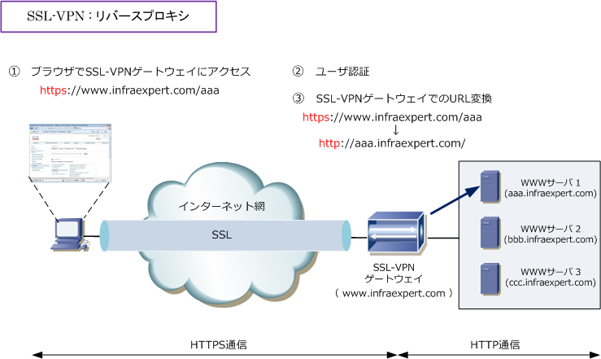
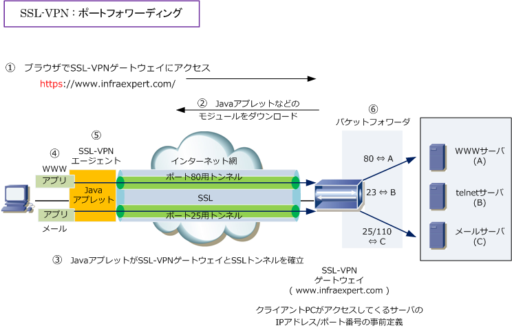
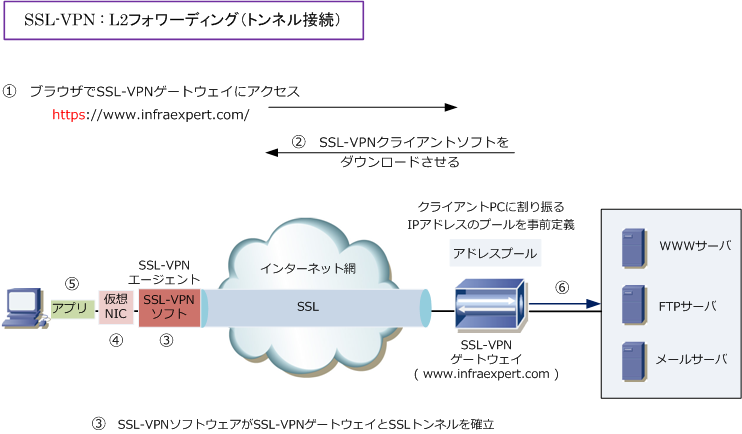

SSL-VPN
SSL-VPNとは
SSL-VPNとは、暗号化にSSL技術を使用したリモートアクセスVPNのことです。リモートアクセスVPNには IPsecによるリモートアクセスVPNと、SSLによるリモートアクセスVPNの大きく2つがありますが、IPsec によるリモートアクセスVPNの場合、クライアントPCに必ずVPN Clientのソフトウェアをインストールする 必要があるのに対して、SSLによるリモートアクセスVPNの場合はWebブラウザさえあれば通信可能です。 ※ SSL-VPN（ L2フォワーディング ）の場合、クライアントPCにSSL-VPNソフトウェアをインストールする必要があります。
SSL-VPN（リバースプロキシ）
SSL-VPNには「リバースプロキシ、ポートフォワーディング、L2フォワーディング」の3方式があります。 SSL-VPN接続にて、よく利用されている接続方式は「 SSL技術とリバースプロキシ技術 」を組み合わせた リバースプロキシの接続方式です。リバースプロキシ方式では先ずリモートアクセスを行うクライアント PCがSSL-VPNゲートウェイとSSL通信を行うためにWebブラウザでhttps://～のURLを入力します。次に アクセスしてきたクライアントPCのユーザ認証を行います。最後に、SSL-VPNゲートウェイは③のような URL変換を行います。このようにしてクライアントPCはイントラネット上のWebサーバと通信を行えます。

※ リバースプロキシ方式では、Webブラウザ だけでSSL-VPNの通信が行えますが、Web ブラウザ上で動作するアプリケーションしか 使用できないため、社内のメールサーバと 通信を行いたい場合、SSL-VPNゲートウェイ が社内のメールサーバに代理でアクセスして その結果をWeb画面に表示させる仕様にする 必要があります。いわゆるWebメールの仕様。
SSL-VPN（ ポートフォワーディング ）
リバースプロキシ方式は、Webブラウザで動作しないアプリケーションは使用できない問題点がありました。 そこで、リモートアクセスしてくるクライアントにJavaやActiveXで作成されたモジュールを追加させた上で SSL-VPN通信を行う方法が考えられました。その方法がポートフォワーディングとL2フォワーディングです。
ポートフォワーディング方式は、基本的に以下の通信フローです。また、このシーケンスのどこかでメーカー の仕様に従ってユーザ認証が行われます。ポートフォワーディング方式では、SSL-VPNゲートウェイの設定で イントラネット内で使用するサーバのIPアドレスとポート番号を事前に定義する必要があることから、FTPの 通信中に動的にポート番号が変更するアプリケーションは使用することができない、という問題点があります。

| 項番 | 説明 |
|---|---|
| ① | クライアントPCから、SSL-VPNゲートウェイにアクセスする。 |
| ② | クライアントPCは、SSL-VPNゲートウェイからJavaアプレットなどのモジュールを自動的にダウンロードする。 |
| ③ | そのJavaアプレットが、SSL-VPNゲートウェイとSSL通信を確立する。 |
| ④ | クライアントPC上で起動したアプリケーションが、そのPC上のSSL-VPNエージェントと通信する。つまり、 VPN先にいるイントラネットのサーバにアクセスしようとする場合、そのデータがJavaアプレットに送信される。 |
| ⑤ | SSL-VPNエージェントは、アプリからの通信のTCP/UDPポート番号に対応したSSLコネクションを確立。 |
| ⑥ | SSL-VPNゲートウェイは、事前に定義したイントラネット内のサーバの情報（IPアドレス/ポート番号）に に基づきクライアントPCから送られてきたデータをイントラネット内のサーバに送信する（パケットフォワーダ） |
SSL-VPN ( L2フォワーディング )
リバースプロキシ方式の次に使用されている方式がL2フォワーディング方式。L2フォワーディングでは PCにSSL-VPNクライアントソフトがインストールされます。この方式では、全てのアプリケーションを SSL-VPN通信で使用することができます。L2フォワーディングでは、アプリケーションのデータをHTTP パケットでカプセル化してSSL通信を行います。ポートフォワーディングのように事前にSSL-VPNゲート ウェイで通信するサーバのIPアドレス/ポート番号の事前定義は必要ないので、FTPなどの動的にポート 番号が変わるアプリケーションの通信を実現しています。プロトコル制限もないのでUDP通信もOKです。

| 項番 | 説明 |
|---|---|
| ① | クライアントPCから、SSL-VPNゲートウェイにアクセスする。 |
| ② | クライアントPCは、SSL-VPNゲートウェイからSSL-VPNクライアントソフトを自動的にダウンロードする。 |
| ③ | そのSSL-VPNクライアントソフトが、SSL-VPNゲートウェイとSSL通信を確立する。 |
| ④ | SSL-VPNクライアントソフトは、クライアントPC上に仮想NICを構築する。 その仮想NICには、SSL-VPNゲートウェイで事前に定義されたIPアドレスが割り当てられる。 |
| ⑤ | クライアントPCが、イントラネット内のサーバにアクセスしようとすると、仮想NICによって宛先がチェックされて イントラネット内のサーバが宛先である場合、仮想NICを経由してSSL通信し、SSL-VPNゲートウェイに送信される。 |
| ⑥ | SSL-VPNゲートウェイは、イントラネット内のサーバに送信する。 |
※ 仮想NICをインストールするために、クライアントPCにログインするユーザは管理者権限が必要となります。
企業ネットワークにSSL-VPNを導入する場合、ログアウト後にそのクライアントPCにデータが残らないよう 自動的にデータが削除されるような実装や外部メディアに書き込まれないように実装させるのが一般的です。
参考 ： Cisco ASAにおけるSSL-VPN
Cisco ASAでSSL-VPNを行う場合、以下の2方式から選択します。つまり、技術的にはリバースプロキシか、 L2ポートフォワーディングを使用します。ポートフォワーディング方式は中途半端なので使われていません。
| Cisco SSL-VPN用語 | SSL-VPN方式 | 説明 |
|---|---|---|
| クライアントレスSSL-VPN | リバースプロキシ | クライアントにはWebブラウザがさえあればOK。このアクセス方式で CIFSでのWindowsファイルのブラウズとWebアクセス、FTPが利用可能。 |
| AnyConnect VPN | L2ポート フォワーディング |
クライアントがWebブラウザでSSL-VPN接続時に、ブラウザ経由で SSL-VPN専用のクライアントソフトウェア（Any Connect VPN）を 自動的にダウンロードし、IPsec-VPNライクに完全なアクセスが可能 |